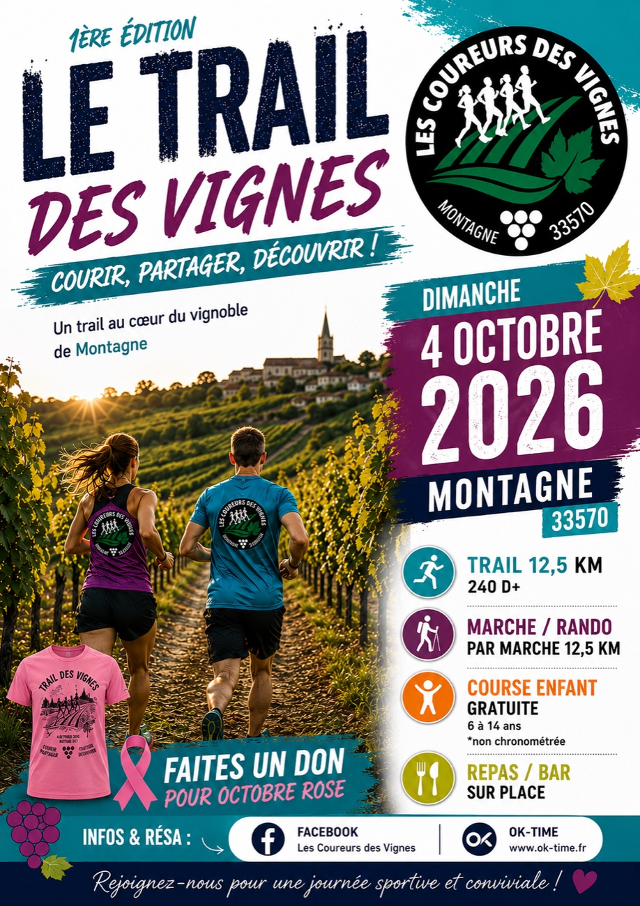
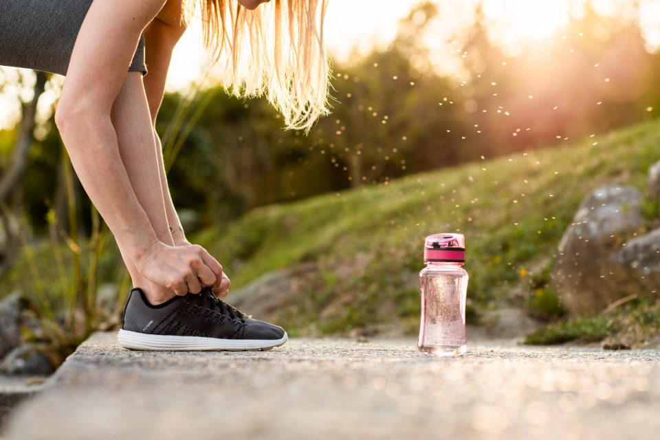
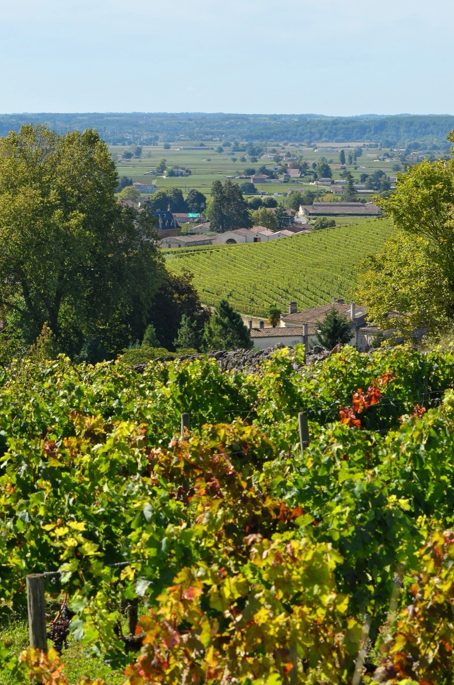
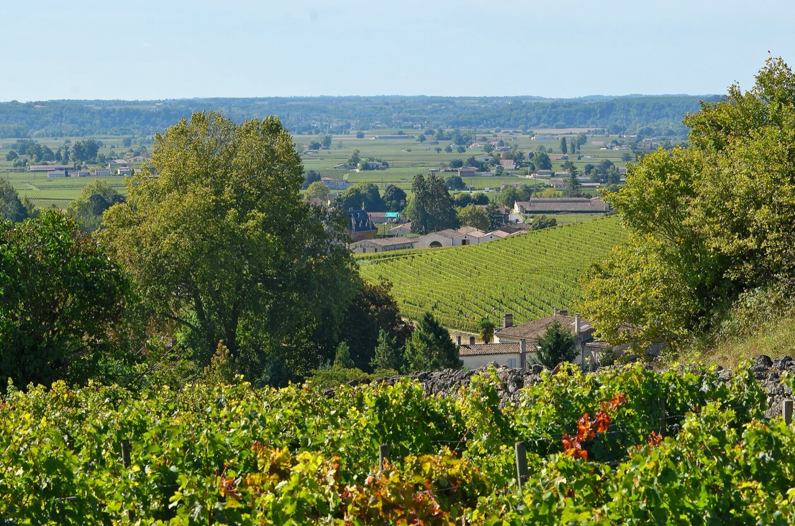

C'est une scène qui se rejoue à chaque ouverture d'inscriptions. Un ado de quatorze ans veut faire le même parcours que ses parents, la famille remplit le formulaire, et l'organisateur refuse. Pas par excès de prudence, ni par caprice : parce que la réglementation fédérale lui interdit de l'accepter.
Ces règles sont mal connues, alors qu'elles conditionnent la moitié des inscriptions d'automne. Voici de quoi s'y retrouver avant de cliquer.
Votre catégorie n'est pas exactement votre âge

Première subtilité : en athlétisme, la saison ne suit pas l'année civile. Elle court du 1er septembre au 31 août. Votre catégorie est donc celle de la saison en cours, et elle peut changer au beau milieu de vos objectifs d'automne. C'est pour ça qu'un coureur peut être junior sur une course de juin et espoir sur celle d'octobre.
Deuxième subtilité : les catégories jeunes ne servent pas seulement au classement. Chez les mineurs, elles fixent aussi une distance maximale autorisée, que l'organisateur doit respecter sous peine de perdre son label.
Les distances maximales, catégorie par catégorie
Pour les courses hors stade et le trail, les limites en vigueur pour 2026 sont les suivantes :
- Poussins (10 et 11 ans) : 1 500 m
- Benjamins (12 et 13 ans) : 3 000 m
- Minimes (14 et 15 ans) : 5 000 m
- Cadets (16 et 17 ans) : 15 km
- Juniors (18 et 19 ans) : 25 km, ce qui autorise le semi-marathon mais pas le marathon
- Espoirs (20 à 22 ans), seniors et masters : plus de limite réglementaire
Conséquence souvent découverte au dernier moment : le marathon est interdit avant 20 ans. Un jeune de dix-neuf ans qui s'entraîne très bien reste, aux yeux du règlement, un junior.
Pourquoi ces limites existent


Ce ne sont pas des limites administratives inventées au hasard. Chez l'enfant et l'adolescent, les cartilages de croissance restent les points faibles du squelette, et les impacts répétés sur une longue distance s'y concentrent. S'ajoute un risque moins visible mais tout aussi réel : celui de la lassitude. Beaucoup de jeunes très précoces sur route arrêtent complètement avant vingt ans.
Autrement dit, ces plafonds ne protègent pas seulement des genoux. Ils protègent une envie de courir sur trente ans.
En trail, le dénivelé entre dans le calcul
Un trail de 12 km n'a rien à voir avec 12 km de route, et la réglementation en tient compte. La règle généralement retenue ajoute 1 km de distance autorisée par tranche de 100 m de dénivelé positif. Un cadet limité à 15 km peut donc s'aligner sur un parcours de 18 km affichant 300 m de montée cumulée.
Comme les formulations varient d'une épreuve à l'autre, le réflexe reste le même : en cas de doute, une question à l'organisateur avant de payer l'inscription règle le sujet en deux minutes.
Côté adultes : pas de plafond, mais une catégorie quand même

À partir de 23 ans on est senior, et à partir de 35 ans on entre chez les masters, découpés en tranches de cinq ans (M0, M1, M2 et ainsi de suite). Aucune distance n'est interdite, mais la catégorie reste utile : c'est elle qui permet de se comparer à des coureurs de sa génération plutôt qu'au scratch général. Beaucoup de nos adhérents découvrent qu'ils sont très bien placés dans leur catégorie alors qu'ils se jugeaient moyens au classement global.
Dernier point valable à tout âge : il faut un justificatif. Licence FFA pour les licenciés, Pass Prévention Santé pour les autres, et une autorisation parentale pour les mineurs. Nous avons détaillé tout ça dans notre article sur les justificatifs de santé.
Et le 4 octobre, chez nous ?
Le Trail des Vignes propose un 12,5 km chronométré avec 240 m de dénivelé positif : il est donc ouvert dès la catégorie cadet, c'est-à-dire à partir de 16 ans. La marche de 12,5 km suit le même tracé sans chrono. Et pour les plus jeunes, la course enfant est gratuite, ouverte de 6 à 14 ans et non chronométrée : c'est exactement la formule que la réglementation encourage, courir pour le plaisir avant de courir pour le temps.
Tous les détails de la journée sont sur la page Événements, et le récit de l'épreuve dans notre article dédié.
Un règlement bien lu, c'est surtout une inscription qui ne se refuse pas.